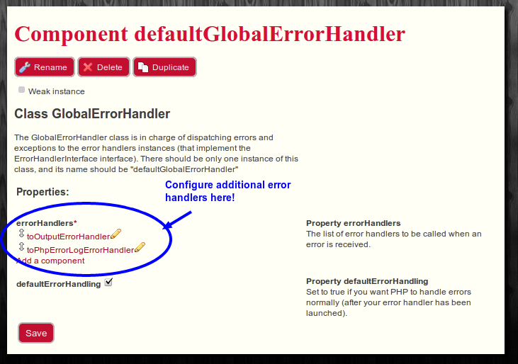

The error handler package is a package whose goal is to make it easier to handle PHP errors and exceptions.
You might be aware that by default, PHP comes with a set_error_handler and a
set_exception_handler functions that allow you to catch any non fatal error or
any uncatched exception, and act accordingly. The point is you can only have one function
registered to handle errors and one for exceptions.
The Error Handler package allows you to add many functions to handle errors, and furthermore, it provides meaningful defaults.
By default, Error Handler will improve on the way errors are managed by PHP. All PHP notices/warnings/errors will be displayed in a nice HTML table, with a complete stacktrace. By clicking on a function of the stacktrace, you will be able to see the parameters passed to the function, which can be incredibly helpful to solve your problem. Exceptions handling will also benefit from the same HTML rendering. Furthermore, the PHP error log will also be filled with a complete stacktrace so you can easily understand what is going on.
To get this behaviour, all you have to do is simply to enable the package, but wait, there is more....
After installing the package, have a look at the instances it created. One of the instances is called "defaultGlobalErrorHandler". This instance will receive all the errors and all the uncaught exceptions from your application. It will forward those errors to all the registered error handlers.
Error handlers are classes implementing the "ErrorHandlerInterface". It is fairly easy to implement so you can add your own.
By default, there are 3 errors handlers provided in this package:
And as usual, you can add more error handlers if you like.
If you plan to write your own error handlers, you will probably need at some point to render the PHP error, or the PHP exception into HTML, or text, so the developer can read it. In the errorhandler package, the task of rendering an error or an exception is done by objects implementing the ErrorRendererInterface (for rendering errors) and the ExceptionRendererInterface (for rendering exceptions). By default, the errorhandler package comes with 2 renderers:
Do not hesitate to use those instances if you want. Alternatively, you can add your own renderer class and keep using the provided error handlers, since those handlers are relying on the renderers to transform errors and exceptions into HTML or text.